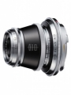

大名鼎鼎的福伦达Heliar（海利亚）结构在1900年由汉斯·哈丁设计而成，3组5片的经典结构也让曾经的Heliar 3.5/50成为一代经典，成像锐利、焦外柔美。此次日本确善能公司新推出的Heliar 50/3.5 VM镜头同样采取经典的3组5片结构，内置10片光圈叶片，外观十分亮骚。
充满个性与复古风格的镜头
最大的优点是造型很有个性。从结构来说，带有复古的色彩。因为光圈太小，全开即可得到很锐利的图像。
操作非常令人困扰。转动光圈环的时候，会带动底下的对焦环一起转动。色彩还原只能说是一般。近摄时有一种奇特的感觉，就是虽然是清楚，但边缘没有那种刀锋一样的感觉，或许是反差较弱。